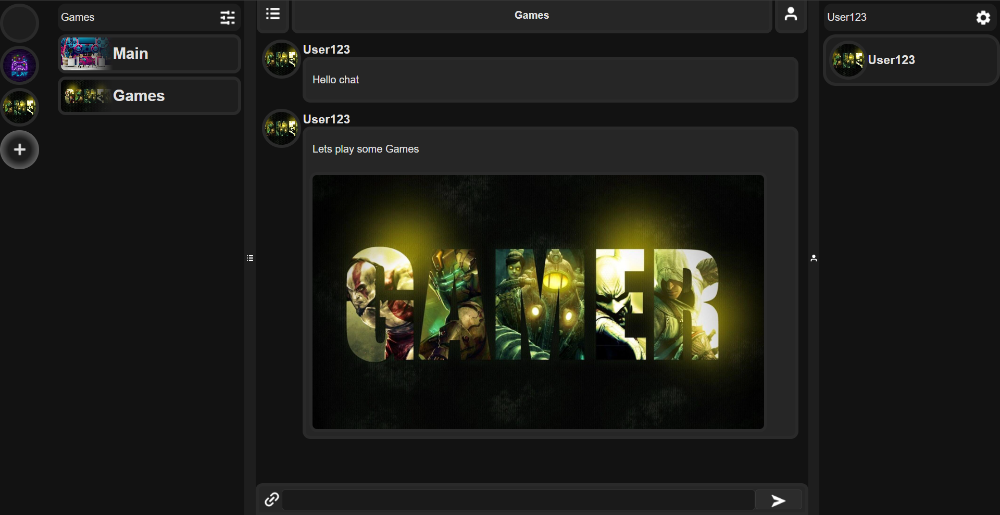
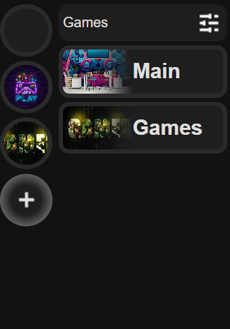

Topugema
Topugema — це сучасний мессенджер, створений спеціально для геймерів. Легкий, швидкий та без зайвого шуму, він дозволяє спілкуватися з друзями під час гри, створювати тематичні канали та обмінюватися медіа без затримок.
Інтерфейс

Простий і сучасний інтерфейс
Topugema має інтуїтивно зрозумілий інтерфейс, що дозволяє зосередитись на спілкуванні та обміні інформацією. Усе необхідне під рукою — без зайвих ускладнень.

Створюйте власні групи з каналами
Організовуйте спільноти за інтересами, створюйте тематичні канали для обговорень, медіа чи ідей. Управляйте групами гнучко та зручно.
Завантаження
На данний час доступна тільки веб-версія